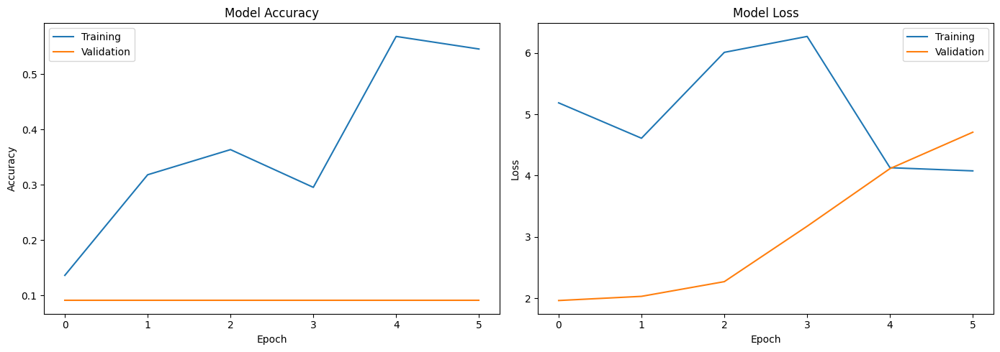
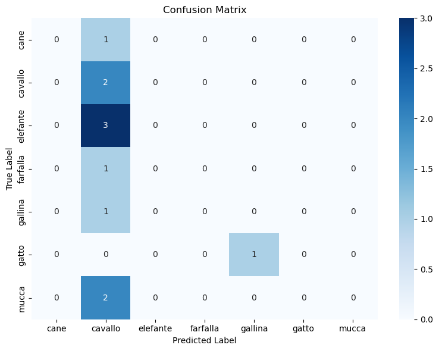

Training History

Grafik akurasi dan loss selama pelatihan.
Model klasifikasi gambar hewan menggunakan TensorFlow.
Nama: Ismat Yulian
Pertemuan: 15
Mata Kuliah: Machine Learning
Project ini melatih model CNN pada dataset gambar hewan dengan 8 kelas, yaitu: cane, cavallo, elefante, farfalla, gallina, gatto, mucca.
Model dilatih dengan arsitektur CNN yang terdiri dari beberapa blok konvolusi, pooling, batch normalization, dan dropout.

Grafik akurasi dan loss selama pelatihan.

Hasil klasifikasi pada data validasi menunjukkan performa model untuk setiap kelas.
pip install -r requirements.txtpython train_cnn.pypython predict.py dataset/gatto/1.jpegPastikan folder dataset/ berisi subfolder untuk setiap kelas. Model menggunakan ukuran input 128×128 piksel.